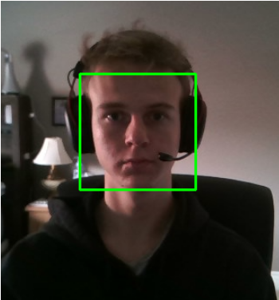

It is quite easy to get started with computer vision, assuming you have knowledge in python. Using OpenCV, an optimised computer vision library, trying out computer vision concepts is extremely simple.

Above is an example of the Haar face recognition algorithm, which I was able to implement through OpenCV in just 25 lines of code.
The code is available below, with the main portion under videocamera.py.
https://github.com/bartek717/OpenCV-haar
If you decide to dive deeper into Computer Vision, I recommend that you try not to use much of the inbuilt functionality in OpenCV, as it oversimplifies the implementation, and you do not learn about the algorithms themselves.
Copyright Ⓒ 2021 Bartek Kowalski. Works Cited: links